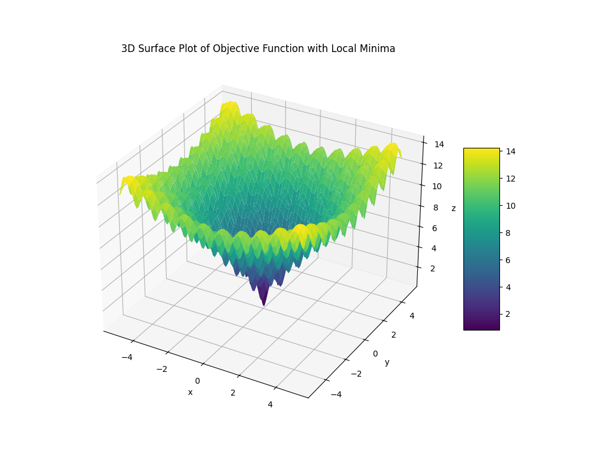

My first exposure to deep learning was from a youtube video by Tsoding, where he was exploring the maths behind neural networks. At this point in time I was very new to machine learning as a whole, but watching him break down the concept of neural networks made me very interested in the field.
After watching the video, I wanted to try to implement a neural network in C myself. This started with just a simple perceptron using finite differences to approximate gradients.
After that I dropped the project, because I didn't understand the maths behind backpropagation, so I struggled to actually implement larger networks. That is until I started my Masters, where I decided to try to really understand backpropagation and the underlying mathematics.
And thus, RichNN became a complete implementation of a neural network from scratch in C, this little post talks through, how you can make your own neural network in C!
If you don't already understand how neural networks work, I have some notes from when I was learning about them on my website. Fundamentally, a neural network is a series of matrix multiplications followed by non-linear activation functions. Under the hood the the activation for a given layer L looks like this:
$$ a^L = \sigma(W \cdot x + b) $$
$$\begin{align} \begin{bmatrix} a_{11}^L & a_{12}^L & a_{13}^L \end{bmatrix} = \sigma \left( \begin{bmatrix} w_{11} & w_{12} & w_{13} \\ w_{21} & w_{22} & w_{23} \\ w_{31} & w_{32} & w_{33} \end{bmatrix} \cdot \begin{bmatrix} x_{1} \\ x_{2} \\ x_{3} \end{bmatrix} + \begin{bmatrix} b_{1} \\ b_{2} \\ b_{3} \end{bmatrix} \right) \end{align}$$
In essence, we have a bunch of weights in a matrix, multiplied by a vector of inputs, and then we add a bias vector. Passing this through an activation function like Sigmoid, this gives us a set of activations for the neuron.
To represent the various components of a neural network, we need to define some data types. The first is a structure which I called Tensor2D to represent matrices and vectors.
typedef struct {
int rows;
int cols;
float **data;
} Tensor2D;
This structure allows us to store the dimensions of the matrix as well as a pointer to the actual data, which is a 2D array of floats.
Along with that, we need a set of operations to be able to interact with these tensors, such as creating, deleting, and performing mathematical operations on them. Since C doesn't support operator overloading these take the form of functions.
I implemented the following because that's what I needed for my neural network library, but you can extend it as needed.
// Memory Management
// allocate memory for the matrix, rox x col x sizeof float
Tensor2D* Tensor_alloc(int rows, int cols);
// free the memory for a tensor -> the data, and the tensor itself.
void Tensor_free(Tensor2D* matrix);
// calls Tensor_alloc and initalised with r x c random float values
Tensor2D* Tensor_init(int rows, int cols);
// Copying
Tensor2D* Tensor_copy(Tensor2D* src);
void Tensor_copy_into(Tensor2D* dest, Tensor2D* src);
// Operations
Tensor2D* Tensor_mul(Tensor2D* a, Tensor2D* b);
Tensor2D* Tensor_add(Tensor2D* a, Tensor2D* b);
Tensor2D* Tensor_sub(Tensor2D* a, Tensor2D* b);
Tensor2D* Tensor_scale(Tensor2D* a, int scalar);
Tensor2D* Tensor_transpose(Tensor2D* a);
Tensor2D* Tensor_hadamard(Tensor2D* a, Tensor2D* b);
// map a function over each value in the tensor
void Tensor_map(Tensor2D* a, float (*func)(float));
// Utils
// print the tensor into the terminal
void Tensor_print(Tensor2D* tensor);
// fill the tensor will a specified val
void Tensor_fill(Tensor2D* matrix, float val);
// show the dimensions of the tensor
void Tensor_Dim(Tensor2D* t);
I won't go over the implementation details of these functions here, but you can find them in the source code, within Matrix.h.
Note: that matrix multiplication is implemented in the most naive way possible, so it is not optimised for performance.
With the tensor structure in place, we can now define the structure of a neural network. A neural network is made up of layers, each layer has weights and biases, as well as activations and z values (the weighted inputs before activation).
typedef struct {
Tensor2D* weights;
Tensor2D* bias;
size_t size;
} Layer;
typedef struct {
size_t layer_count;
Layer** layers;
Tensor2D** activations;
Tensor2D** zs;
int sample_size;
int train_size;
} NeuralNetwork;
Along with some utility functions to initalise and crease these objects, again you can find them in the source code under RichNN.h.
Activation functions are a crucial part of neural networks, as they introduce non-linearity into the model. Without them, the network would simply be a series of linear transformations, which limits its ability to learn complex patterns.
In RichNN, I have implemented a range of activation functions, along with their derivatives, which are used during backpropagation.
float sigmoid(float x)
{
return 1.f / (1.f + expf(-x));
}
float ReLu(float x)
{
return MAX(0.0f, x);
}
float tanH(float x)
{
return tanh(x);
}
// Derivatives of Activation Functions
float dsigmoid(float dx)
{
return sigmoid(dx)*(1-sigmoid(dx));
}
float dReLu(float dx)
{
if (dx < 0) return 0.0f;
else return 1.0f;
}
float dtanH(float dx)
{
return 1 - powf(tanh(dx), 2.0f);
}
The forward pass is the process of passing input data through the network to obtain an output. This involves multiplying the input by the weights, adding the biases, and applying the activation function at each layer.
The forward pass gives us a set of activations for each layer, along with z values, which are then used in the subsequent layers and during backpropagation.
Activations are values from the neuron after passing the computation through the activation function, and Z values are the weighted inputs before activation.
$$ \begin{align} z = W \cdot x + b \\ a = \sigma(z) \end{align} $$
Tensor2D* forward(NeuralNetwork* network, float inputs[], int inputSize, float (*activationFunc)(float))
{
int L = (int)network->layer_count;
// build input activation vector (activations[0])
if (network->activations[0]) {
Tensor_free(network->activations[0]);
}
network->activations[0] = Tensor_init(inputSize, 1);
for (int i = 0; i < inputSize; ++i) {
TENSOR_AT(network->activations[0], i, 0) = inputs[i];
}
Tensor2D* a_prev = network->activations[0];
// Forward through layers 1 to L-1
for (int l = 1; l < L; ++l) {
Layer* layer=network->layers[l];
// z = W * a_prev + b
Tensor2D* prod = Tensor_mul(layer->weights, a_prev); // shape n_out x 1
if (network->zs[l]) Tensor_free(network->zs[l]);
network->zs[l] = Tensor_add(prod, layer->bias);
Tensor_free(prod);
// compute activation a = sigma(z)
if (network->activations[l]) Tensor_free(network->activations[l]);
network->activations[l] = Tensor_copy(network->zs[l]); // copy shape n_out x 1
if (l == L - 1) {
Tensor_map(network->activations[l], sigmoid); // final activation sigmoid
} else {
Tensor_map(network->activations[l], activationFunc);
}
a_prev = network->activations[l];
}
return network->activations[L-1]; // note: last index is L-1
}
The cost function measures how well the neural network is performing. In RichNN, I have implemented the Mean Squared Error (MSE) cost function.
The cost function tells us how well the network is performing for a given set of inputs and expected outputs.
I only really use this for reporting the training loss, but in the early stages I used it for finite differences to estimate gradients.
float cost(NeuralNetwork* network, int n, int out, float (*input_vals)[n], float output_vals[][out])
{
float MSE = 0.0f;
int N = network->train_size;
int output_size = network->layers[network->layer_count - 1]->size;
for (int i = 0; i < N; i++) {
// Copy input
float input_sample[n];
for (int j=0; j < n; j++)
input_sample[j]=input_vals[i][j];
// Forward pass
Tensor2D* pred=forward(network, input_sample, n, sigmoid);
// MSE across all outputs
for (int k=0; k < output_size; k++) {
float y = TENSOR_AT(pred, k, 0);
float t = output_vals[i][k];
float d = y - t;
MSE += d * d;
}
}
// Normalize by total samples * output dimensions
MSE /= (float)(N * output_size);
return MSE;
}
To train the neural network, we need to compute the gradients of the cost function with respect to the weights and biases. This is needed for the gradient descent optimisation algorithm.
For a quick review, gradient decent is an algorithm for updating the weights and biases of the network in order to drive to a minimum of the cost function.
Since neural networks are trained by minimising the cost, the negative of the gradient tells us which direction to move the parameters to reach a local minimum. Intuitively, the gradient points in the direction of steepest ascent, so moving in the opposite direction reduces the cost.

If that sounds confusing, think of it like this:
Above is a 3D surface plot representing a cost function, which has multiple local minima and maxima (the peaks and valleys). If we compute the gradient and do backwards we move towards a local minimum, a valley. A high dimensional plane like this has many such valleys and peaks.
Sometimes networks get stuck in local minima, which can prevent them from finding the best possible solution. There are techniques to help avoid this, such as using different optimization algorithms or initializing weights differently, but we will ignore this issue for now since we are training very simple networks.
There a many ways to compute gradients, including numerical methods like finite differences and analytical methods like backpropagation.
The overarching goal is to compute a vector of partial derivatives (gradients) of the cost function with respect to each parameter in the network. That is the gradient vector which represents how each parameter affects the cost and how much.
The vector will look something like this, where ∇ denotes the gradient, and each value in the vector represents how much that parameter affects the cost, some parameters have larger impacts on the cost. If you are interested in the intuition have a look at 3Blue1Browns video.
$$ \nabla C = \begin{bmatrix} \frac{\partial C}{\partial w_{11}^1} & \frac{\partial C}{\partial w_{12}^1} & \cdots & \frac{\partial C}{\partial b_{1}^1} & \cdots \end{bmatrix}^T $$
Initially, I implemented gradient computation using finite differences, which is a numerical method for estimating gradients. The idea is to slightly adjust each parameter by some small value epsilon and observe the change in the cost function.
$$ \Delta f(x) = \frac{f(x + \epsilon) - f(x)}{\epsilon} $$
So the gradient is estimated by taking the difference between a slightly adjusted function and the original function and dividing by epsilon. We can use this to numerically approximate derivatives of functions.
Tensor2D* finite_difference(NeuralNetwork* model, NeuralNetwork* gradients,
float eps, float inputs[][model->sample_size], int out, float outputs[out])
{
NeuralNetwork* m = model;
float current_cost = cost(model, model->sample_size, out, inputs, outputs);
float saved;
for (int i = 0; i < m->layer_count; ++i)
{
Layer* current_layer = m->layers[i];
Layer* current_gradient_layer = gradients->layers[i];
for (int r = 0; r < current_layer->bias->rows; r++)
{
float saved = TENSOR_AT(current_layer->bias, r, 0);
TENSOR_AT(current_layer->bias, r, 0) += eps;
TENSOR_AT(current_gradient_layer->bias, r, 0) =
(cost(model, model->sample_size, out, inputs, outputs) - current_cost) / eps;
TENSOR_AT(current_layer->bias, r, 0) = saved;
}
for (int j = 0; j < current_layer->weights->rows; ++j)
{
for (int k = 0; k < current_layer->weights->cols; ++k)
{
saved = TENSOR_AT(current_layer->weights, j, k);
TENSOR_AT(current_layer->weights, j, k) += eps;
TENSOR_AT(current_gradient_layer->weights, j, k) =
(cost(model, model->sample_size, out, inputs, outputs) - current_cost)/eps;
TENSOR_AT(current_layer->weights, j, k) = saved;
}
}
}
return gradients;
}
However, finite differences is computationally expensive, especially for large networks, as it requires multiple forward passes for each parameter. A more efficient method is backpropagation, which analytically computes the gradients using the chain rule of calculus.
Backpropagation works by propagating the error from the output layer back through the network, computing the gradients at each layer based on the errors and the activations from the forward pass.
Essentially, the error moves backwards through the network, and each neuron is adjusted accordingly to minimize the overall error.
A better explanation can be found either using the videos linked above, or this chapter from the neural networks and deep learning book. The chapter walks through the 4 fundamental equations of backpropagation, used to compute the gradients and update the weights and biases.
The 4 equations are shown below, and they go through the process, of first computing the error of the final layer, and then propagating that error backwards through the network to compute the errors of all the other nodes, and then finding the derivates bias and computing the weights.
$$\begin{align} \delta^L & = \nabla_a C \odot \sigma'(z^L) \\ \delta^L & = ((w^{l+1})^{\top} \delta^{l+1}) \odot \sigma'(z^L) \\ \frac{\partial C}{\partial b_j^l} &= \delta_j^l \\ \frac{\partial C}{\partial w_{j k}^l} &= a_k^{l-1} \delta_j^l \end{align}$$
The equations are implemented below with gradients accumulation for each layer. We need to accumulate the gradients in order to update the weights and biases by adding on the gradient.
Tensor2D* backpropagation(NeuralNetwork* model, NeuralNetwork* gradients,
float inputs[][model->sample_size], float outputs[])
{
int L = model->layer_count;
int output_size = model->layers[L - 1]->size;
// 1. Compute δ_L = (a_L – y) ⊙ σ′(z_L)
Tensor2D* aL = model->activations[L - 1];
Tensor2D* zL = model->zs[L - 1];
// build y vector
Tensor2D* y = Tensor_init(output_size, 1);
for (int i = 0; i < output_size; i++)
TENSOR_AT(y, i, 0)=outputs[i]; Tensor2D* diff=Tensor_sub(aL, y); // (a_L - y)
Tensor2D* sigpL=Tensor_sigmoid_prime(zL); // σ′(z_L)
Tensor2D* delta=Tensor_hadamard(diff, sigpL); // δ_L Tensor2D*
d_final=Tensor_copy(delta); // store δ_L to returning
// Store grads for output layer
Tensor2D* a_prev=model->activations[L - 2];
Tensor2D* a_prev_T = Tensor_transpose(a_prev);
Tensor2D* dW_L = Tensor_mul(delta, a_prev_T); // ∇W_L
for (int i = 0; i < gradients->layers[L-1]->weights->rows; i++)
{
for (int j = 0; j < gradients->layers[L-1]->weights->cols; j++)
{
TENSOR_AT(gradients->layers[L-1]->weights, i, j) += TENSOR_AT(dW_L, i, j);
}
}
for (int i = 0; i < gradients->layers[L-1]->bias->rows; i++)
{
TENSOR_AT(gradients->layers[L-1]->bias, i, 0) += TENSOR_AT(delta, i, 0);
}
// 2. Backpropagate through hidden layers: δ_l = (W_(l+1)^T δ_(l+1)) ⊙ σ′(z_l)
Tensor2D* delta_next = delta;
for (int l = L - 2; l >= 1; l--)
{
Tensor2D* W_next = model->layers[l + 1]->weights;
Tensor2D* W_next_T = Tensor_transpose(W_next);
Tensor2D* tmp = Tensor_mul(W_next_T, delta_next); // W^T δ_(l+1)
Tensor2D* sigp = Tensor_sigmoid_prime(model->zs[l]);
Tensor2D* delta_l = Tensor_hadamard(tmp, sigp);
// ∇W_l = δ_l * a_(l-1)^T
Tensor2D* a_prev_l_T = Tensor_transpose(model->activations[l - 1]);
Tensor2D* dW_l = Tensor_mul(delta_l, a_prev_l_T);
for (int i = 0; i < gradients->layers[l]->weights->rows; i++)
{
for (int j = 0; j < gradients->layers[l]->weights->cols; j++)
{
TENSOR_AT(gradients->layers[l]->weights, i, j) += TENSOR_AT(dW_l, i, j);
}
}
for (int i = 0; i < gradients->layers[l]->bias->rows; i++)
{
TENSOR_AT(gradients->layers[l]->bias, i, 0) += TENSOR_AT(delta_l, i, 0);
}
if (l != L - 2) Tensor_free(delta_next);
delta_next = delta_l;
}
return d_final;
}
And that's it, that's effectively the entire implementation of neural networks in C, minus some memory management details.
RichNN is a really bare minimum library for training neural networks. It is in fact so bare minimum that it is almost inconvenient to use for anything but the simplest tasks. So I will walk through a simple example and link a more complex example below.
You can create a network using the following code snippet taken from the `Xor.c` example.
int layer_sizes[] = {2, 4, 1};
int layer_count = sizeof(layer_sizes) / sizeof(layer_sizes[0]);
int individual_example_inputs = 2;
int OUT_DIM = 1;
float inputs[][2] = {{0,0}, {0,1}, {1,0}, {1,1}};
float outputs[][1] = {{0}, {1}, {1}, {0}};
int train_count = 4;
NeuralNetwork* XorNetwork = (NeuralNetwork*)malloc(sizeof(NeuralNetwork));
init_network(XorNetwork, layer_sizes, layer_count, individual_example_inputs, train_count);
NeuralNetwork* gradients = (NeuralNetwork*)malloc(sizeof(NeuralNetwork));
init_network(gradients, layer_sizes, layer_count, individual_example_inputs, train_count);
This creates a network with 2 input neurons, one hidden layer with 4 neurons and one output neuron. The network is then trained on the XOR dataset.
In XOR the aim is to replicate the outputs of an XOR gate. This is a commonly used example in neural network tutorials because it is a simple problem that is not linearly separable, demonstrating the need for a hidden layer, and thus backpropagation.
Next we build the training loop, which requires iterating over the training data performing forward and backward passes, and updating the networks weights and biases.
I defined a learning rate of 0.5 and set the number of iterations to 10000, but you can adjust this. I am almost certain 10000 iterations is too much for this problem, but it gets the point across.
float rate = 0.5f;
int iterations = 10000;
for (int iter = 0; iter < iterations; ++iter)
{
for (int j=0; j < train_count; ++j)
{
float single_input[2]={
inputs[j][0], inputs[j][1]
};
float single_output[1]= { outputs[j][0] };
// Forward pass
Tensor2D* output = forward(
XorNetwork, single_input, individual_example_inputs,
sigmoid
);
// Backward pass
delta_L = backpropagation(
XorNetwork, gradients,
&single_input, single_output);
}
// Update weights and biases
batch_gradient_descent(XorNetwork, gradients, rate);
// Logging the loss
if (iter % 100 == 0)
{
float current_cost = cost(XorNetwork, individual_example_inputs,
OUT_DIM, inputs, outputs[0]
);
printf("Epoch %d / %d | Cost = %f\n", iter, iterations, current_cost);
}
}
A more complex example using the Iris dataset can be found in the examples folder of the RichNN repository.
The example only computes accuracy, but considering how limited this library is, it achieves a pretty good accuracy.
Firstly, I'm really pleased how this turned out; having managed to achieve about 90% accuracy on the Iris dataset with a relatively simple neural network implementation, is amazing because it proves that this network works for real (test) data.
RichNN also taught me a lot about the fundamentals of neural networks and the challenges involved in implementing them from scratch, and taught me the mathematics behind them. I think everyone interested in ML should implement one themselves at least once.
There are many ways this project could be extended and improved. Some potential future directions include: